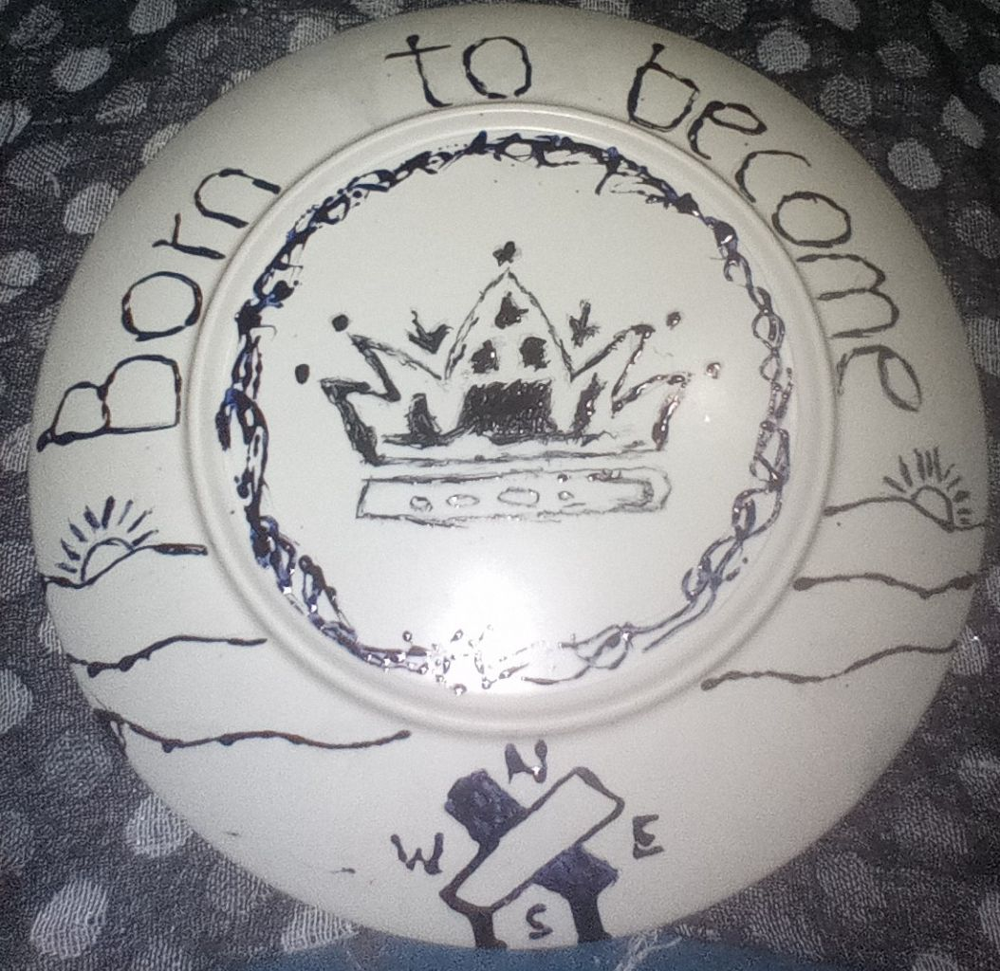
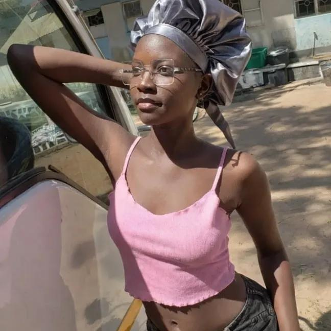
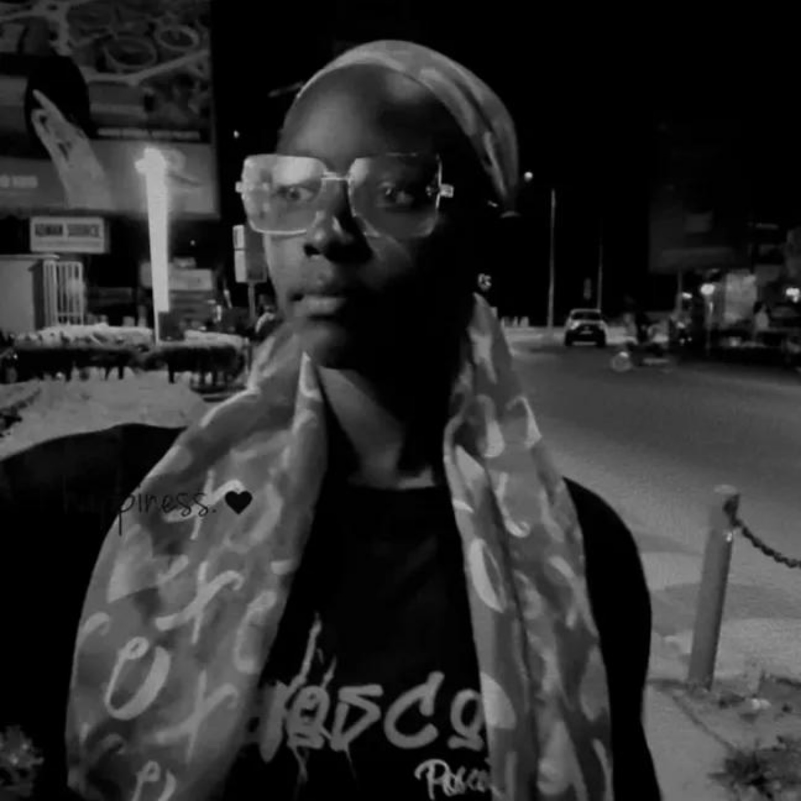

A thought to carry
Notice more.
There are stories hidden in small details. Your way of seeing the world is worth nurturing.
For the artist, the memories, and all the unwritten chapters still waiting ahead.

Dear Janiz,
This is not quite a website, and not exactly a diary. Think of it as a small collection of moments, thoughts and wishes — put together because your story deserves more than a hurried message on a screen.
It is made from what I have been able to keep: a few photographs, an artwork, songs you shared, conversations I remember, and the simple fact that our paths crossed.
You once described yourself as inseparable from art. That stayed with me. I think of art as a way of noticing — giving attention to details, finding meaning in ordinary things, and making something that did not exist before.
I hope you never lose that part of yourself. Keep drawing, exploring, learning and trusting your own creative instincts. You do not have to make every piece perfect. You only have to keep giving yourself permission to create.
There are stories hidden in small details. Your way of seeing the world is worth nurturing.
Let every sketch, experiment and unfinished idea teach you something new.


Basketball was one of the places where our paths met. You were at the beginning of learning the game, and there was a whole world beyond the court too — including the school's art studio, where creativity had its own space.
Some places become memorable not because anything extraordinary happened there, but because of the people we associate with them. I will remember those school-day chapters with appreciation.
There was Sunflower by Post Malone, and the stitched video of your pictures set to Photograph by Ed Sheeran. I watched it like a little film, letting the images and music tell their own story.
There were our conversations too — playful, thoughtful, sometimes poetic. I remember telling you that meeting you felt like a healing presence during a difficult time. I remember your reply, and the warmth it carried.
And I remember the phrase that our vibes match. Perhaps that is one of the simplest ways to describe a connection: two people finding a rhythm that feels familiar.
Post Malone — a little brightness attached to a memory.
Ed Sheeran — pictures, music and a day that felt like a film.
To the artist, the learner, the basketball beginner, and the person still becoming.
You are still preparing for your examinations, so this is not a graduation speech or a celebration written before its time. It is encouragement for the work you are doing now.
May you find focus when the days feel full, patience when a topic takes longer to understand, and confidence to keep trying. Take care of yourself along the way. An examination matters, but it does not contain the whole measure of your ability or your future.
Keep your curiosity. Keep your art. Keep making room for the person you have not met in yourself yet.
This plate is the heart of this collection. I designed it with your memories in mind, and it carries symbols that can be read in more than one way. I wanted it to be more than decoration: a small object holding a thought.

Worth, dignity, and the reminder that you have a hand in shaping your own story.
Possibility. There is always more beyond the point where you stand today.
Direction, discovery, and the courage to find a path that feels like your own.
These are the meanings I see in the drawing. You are free to discover your own meanings in it, too.
I wanted to make something that would last a little longer than an ordinary message — something that could hold a few memories, a little encouragement, and a reminder that your creativity is worth nurturing.
Thank you for the music, the conversations, the laughter and the moments that have become part of my own story. Thank you for reminding me that two people can recognise a familiar rhythm in one another. When I said our vibes match, I meant it.
As you continue preparing for your examinations, I wish you steadiness, clarity and confidence. Give your best to the work in front of you, but remember that one result cannot define the full range of what you can become.
Keep making art. Keep learning. Keep playing, even when you are still a beginner. Keep asking questions and noticing the world in your own way. I hope life gives you room to grow into every good possibility waiting for you.
This gift is not a definition of who you are, and it is not a set of expectations for who you must become. It is simply a thank-you, a little encouragement, and a collection made with care for the person you are today.
With gratitude,
Grey